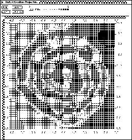
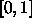

The projection analysis tool allows to display how the output of one unit (e.g. a hidden or an output unit) depends on two input units. It thus realizes a projection to two input vector axes.
It can be called by clicking the button in the manager panel or by typing Alt-p in any SNNS window. The display of the projection panel is similar to the weights display, from which it is derived.
in the setup panel, two units must be specified, whose inputs are varied over the given input value range to give the X resp. Y coordinate of the projection display. The third unit to be specified is the one whose output value determines the color of the points with the given X and Y coordinate values. The range for the color coding can be specified as output range. For the most common logistic activation function this range is

.
The use of the other buttons, , and
 are analogous to the weight display and should be obvious.
are analogous to the weight display and should be obvious.
The projection tool is very instructive with the 2-spirals problem,
the XOR problem or similar problems with two-dimensional input. Each
hidden unit or output unit can be inspected and it can be determined,
to which part of the input space the neuron is sensitive. Comparing
different networks trained for such a problem by visualizing to which
part of the input space they are sensitive gives insights about the
internal representation of the networks and sometimes also about
characteristics of the training algorithms used for training. A
display of the projection panel is given in figure  .
.